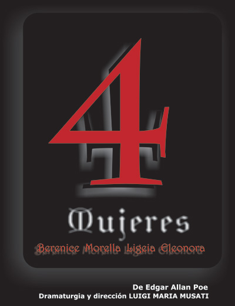

Información: (+57) 350 215 11 00 (WhatsApp)
4 MUJERES
BERENICE - MORELLA - LIGEIA - ELEONORA
de Edgar Allan Poe
 |
|
Él mismo, en sí mismo, por sí mismo, siempre uno
Por: Luigi Maria Musati
Segunda etapa, después de La caída de la casa Usher, del proyecto trienal para los doscientos años del nacimiento de Edgar Allan Poe. 4 Mujeres pone en escena los cuatro cuentos dedicados a lo Femenino: Berenice, Morella, Ligeia, Eleonora.
Aun cuando las fechas de composición de cada cuento no son todavía acertadas, sí lo son las de su primera publicación. Estas fechas tienen para nosotros el máximo interés, porque así se puede entender la dinámica del pensamiento del Autor, su desarrollo y su progresión. Por esta precisa razón los cuentos se presentan en este orden y no según lo que generalmente se encuentra en las distintas colecciones de los escritos de Poe.
El tema que unifica los cuentos es el Amor, la relación simbólica y vivencial de lo Masculino y de lo Femenino, con rasgos exquisitamente dark romantic, pero muy semejantes a los de la poesía cortés medieval y en particular de Dante Alighieri. La Mujer puede ser abstracción (Berenice), pozo infinito y temible (Morella), sueño y seducción (Ligeia), pero finalmente lo Femenino es el horizonte en el cual lo Masculino alcanza su identidad en un complejo proceso inexorablemente cruzado por la Muerte (Eleonora). De la obsesión cientificista y necrófila de Aegeus (el narrador de Berenice) a la sublimación metafísica de Piros (el narrador de Eleonora) los cuatros cuentos narran una especie de viaje dantesco entre el infierno y el purgatorio que se queda a las puertas del paraíso.
Hemos analizado atentamente los textos y sus variantes (muchas en Berenice y en Morella) y comparado los textos narrativos y los poemas, en los cuales muchas veces recorren los nombres de Eleonora y de Ligeia. De todo el proceso preparatorio no vamos a dar cuenta aquí: será suficiente decir que, como siempre, todo se desarrolló según los principios de una interpretación que empieza como alejamiento crítico y termina con una interrogación directa al Autor, hasta el ensimismamiento (en cuanto sea posible) con su escritura. Además, la experimentación de La caída de la casa Usher nos persuadió a seguir adelante en la utilización del Coro como persona dramática, de la música original en vivo y del canto como componentes esenciales y no decorativos de la dramaturgia.
El tema conductor es el poema El cuervo.
En el cuento Berenice son interpolados un fragmento del poema alejandrino de Calímaco La cabellera de Berenice y el cuento de Poe La isla del Hada.
En Morella hay algunas citas de Fichte, Schelling y Boehme, filósofos sólo enunciados en el cuento; el himno Ave María pertenece a la primera composición y edición del cuento, posteriormente eliminado y publicado en los poemas con el título Himno o Himno Católico.
En Ligeia son interpolados un poema de Poe: Sueño; un fragmento de la admonición de Circe a Ulises sobre las sirenas (en castellano y en el original griego arcaico); un fragmento del preludio a Tristan und Isolde de Richard Wagner y del Valse triste de Jean Sibelius.
En Eleonora hay citas de La divina comedia (el río del Paraíso terrestre), del Cantar de los cantares, de Yves Bonnefoy y de Omar Khayam un cuarteto.
Por último, creemos importante subrayar que si nada en las composiciones de Poe es casual, mucho menos pueden ser casuales los títulos, los epígrafes, el nombre de los personajes, tal como hemos visto en la La caída de la casa Usher.
En cuanto a los nombres:
Berenice es el nombre de la reina de Egipto, Berenice II, esposa de Ptolomeo III Euergetes, que se cortó la cabellera como prenda a los dioses para el regreso feliz de su esposo de la guerra en Siria.
Morella, es el nombre de la monja catalana Juliana de Morell, famosa por su precoz sabiduría, pero se debe agregar que la raíz "mor" en los idiomas anglo-sajones, indica "obscuridad".
Ligeia es el nombre de una de las sirenas.
Eleonora es el nombre de la reina de Francia e Inglaterra Alienor de Aquitania, protectora de los trovadores e iniciadora del Cantar cortés.
No es necesario agregar más.
Dedicamos la obra a Nuestra Dama: amada, esposa, madre e hija.
¿Poner en escena a Poe?
Poe es, sobre todo, imagen y sugestión de la palabra, construida con una arquitectura formal de rigor despiadado (recordamos aquí su ensayo sobre la composición poética). Cada transformación de sus cuentos en imágenes objetivadas (ya sea teatro o cine) arriesga constantemente la banalidad, el kitsch o la redundancia, toda la parafernalia del terror o de la mística barata. Esto, a decir verdad, nos parece un riesgo que hace parte de su misma técnica compositiva, tendida sobre una sutilísima línea entre lo sublime y lo ridículo, entre lo terrible y el Gran Guiñol, un riesgo que en definitiva el intérprete debe correr porque, antes que él, lo ha corrido el mismo autor. Poe nos desafía a creer: quizás nunca otro autor ha corroborado más la máxima de Gorgia el sofista, para quien "el arte es un engaño, y aquél que sabe engañar es un hombre mejor que aquél que no sabe engañar; y aquél que se deja engañar es más sabio que quien no se deja engañar". La palabra escrita de Poe es, en resumen, una palabra que crea mundos, y en este sentido representa para nosotros, como precedentemente nos ha ocurrido con Séneca, el máximo de la teatralidad, al menos cuando el teatro no busca ser una representación voyeur, pero sí la capacidad de re-presentar, de volver presente algo, evocándolo de las sombras.